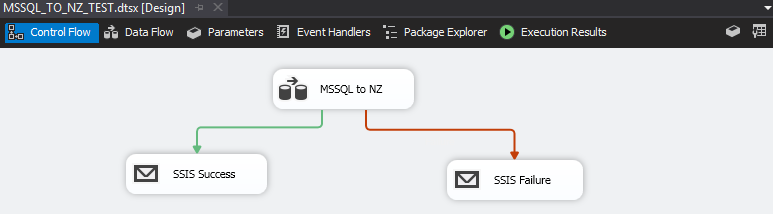
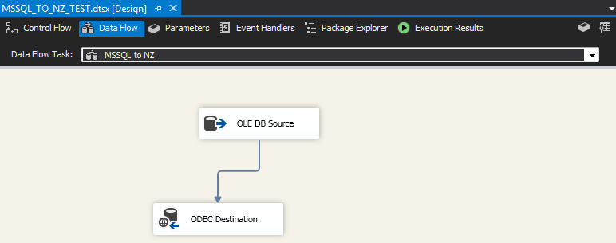
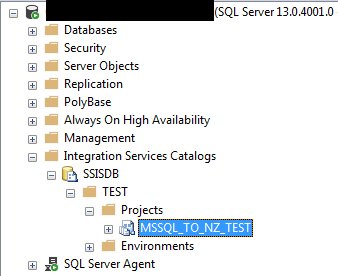
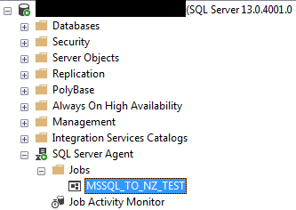

Using SQL Server Integration Services (SSIS), we can easily move data between data sources and schedule the task as a SQL Agent job. To demonstrate, below are the steps required to upload data from a SQL Server database into a Netezza database (using OLE DB to ODBC).
-
Install Visual Studio and SQL Server Data Tools (SSDT)
- Create a Visual Studio SSIS project.
- Set project compatibility to match SQL Server version:
Properties > Configuration Properties > General > TargetServerVersion- If you are prompted to reload all files, select “Yes to All”.
- Set project compatibility to match SQL Server version:
-
In the package designer’s “Control Flow” tab, add a Data Flow Task from the SSIS Toolbox. I recommend attaching success and failure notifications.

- In the Data Flow Task, add a “Source Assistant” to create the OLE DB connection to SQL Server and add an “ODBC Destination” to Netezza.
- ODBC connection must exist on all servers that run this SSIS package

-
Select
Project > Deployto upload the package into an SSIS catalog.
- Create a SQL Agent job to schedule and run the uploaded SSIS package.
- You will encounter an error at this step if the proper compatibility is not set (step 2).
